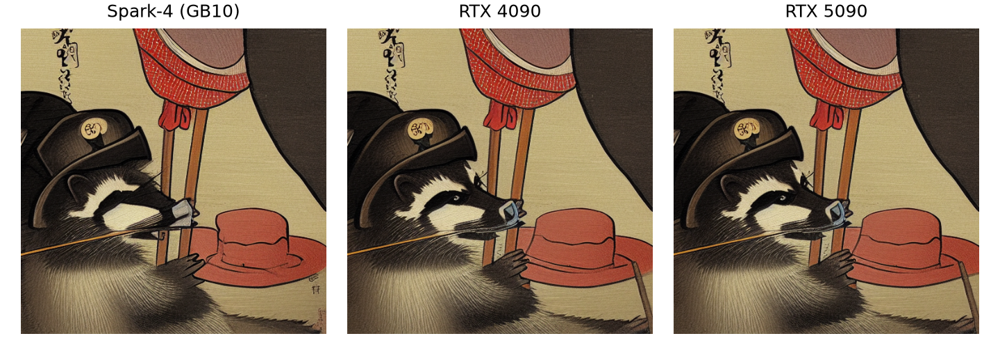
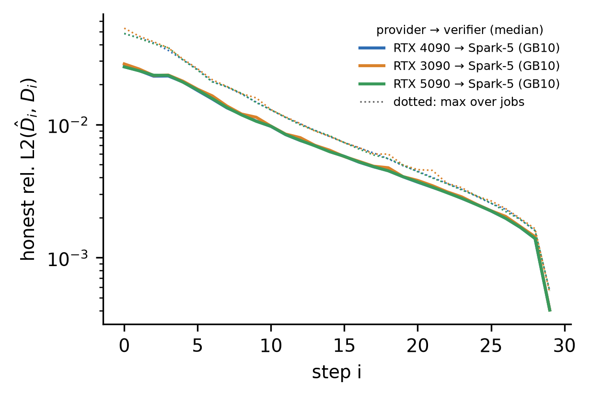

Calibrated trajectory verification: pilot findings (WP0b)
Pilot of 23–24 Nov 2026 · Nodes: DGX Spark ×3 (GB10, ARM), rented RTX 5090 (consumer Blackwell, in place of the out-of-stock RTX 5080), RTX 4090, RTX 3090 (x86) · Python 3.12.13, torch 2.14.1+cu130, ComfyUI 8b25bbc, SDXL and SD1.5, 30 steps · Every number comes from a logged run in experiments/runs/20261124-wp0b-*
Verdict: go. Honest outputs are bit-identical between Sparks and never bit-identical across GPU types, consumer Blackwell included, so there is honest variation to calibrate at every level. The deployed WOMBO rule (SN30) accepts every frame-copy, interpolation and solver-inversion forgery on all four card types. Rented GPU time for the honest runs fits the budget; moving trajectories off rented cards is the cost risk.
1. Reproducibility: two hardware families
- Same hardware family, bit-identical. Spark-4 vs Spark-5: 40/40 SDXL and 20/20 SD1.5 trajectories identical (Merkle roots), with both samplers (euler, dpmpp_2m). Spark-4 twice: identical.
- Shared load changes nothing on a Spark. P6: 60/60 trajectories identical across four conditions (idle or under our own GPU load at 46 TFLOP/s, ComfyUI's batching pinned or free), while the production chat model served requests during up to 30 of the 60 jobs.
- Across GPU types, never bit-identical, but close. 0/40 identical for every pair among Spark, RTX 5090, 4090 and 3090 (table 1). Images differ by about 1.2–1.5 grey levels on average.
- CPU arithmetic splits into ARM and x86. The seed's initial noise and ComfyUI's CPU-computed noise schedule agree bit for bit among the three x86 hosts (incl. an AVX-512 EPYC 9554) and among the three Sparks, but not between the two: noise differs by up to 2.3·10−6, the schedule by one float32 ULP in 4 of 31 entries. Both checks now use fixed, build-agnostic tolerances (noise 10−5, schedule 10−6 relative) that hold for any CPU and PyTorch version without a per-build test, and give an attacker no usable freedom.
| Honest SDXL pair (40 jobs) | Identical | LPIPS median (max) | DINOv2 min | SN23 full reward |
|---|
| Spark-4 ↔ Spark-5 | 40/40 | 0 (0) | 1.000 | 40/40 |
| Spark ↔ RTX 5090 | 0/40 | 0.005 (0.079) | 0.981 | 40/40 |
| Spark ↔ RTX 4090 | 0/40 | 0.005 (0.057) | 0.981 | 40/40 |
| Spark ↔ RTX 3090 | 0/40 | 0.006 (0.054) | 0.927 | 39/40 |
| RTX 4090 ↔ RTX 3090 / 5090 | 0/40 | 0.008 / 0.005 | 0.940 / 0.988 | 40/40 |
Table 1. Honest cross-hardware variation, SDXL 1024², 20 calibration prompts × 2 seeds. SN23 = the deployed NicheImage image rule (full reward needs CLIP cosine > 0.9).
2. The deployed image rule penalises honest hardware differences

Figure 1. One honest SD1.5 job (prompt 293, seed 0) on three cards. The two x86 images agree (CLIP 0.999); the Spark's differs visibly, and SN23 scores it 0.888–0.899 against every x86 card, below its 0.9 line.
An image-level rule cannot tell honest hardware variation from a cheaper computation. SN23 failed one honest SDXL pair (Spark ↔ 3090, CLIP 0.899) and, for SD1.5, the same honest job against all three x86 cards (19/20 each). The x86 cards agreed with each other on every job (20/20). The rate needs RQ1's sample, but the mechanism is clear: small numeric differences sometimes change visible detail, and a fixed similarity line then rejects an honest provider.
3. Trajectory evidence across hardware

Figure 2. Honest Tier B distance per step when a Spark replays an x86 provider's step (40 jobs per provider). No step is bit-exact; the distance falls from 2.7–2.9% (max 5.3%) at step 0 to 0.04% at step 29, the same profile for all three providers.
- Tier B needs per-step thresholds τi. A single threshold would be loose late or tight early by two orders of magnitude.
- Tier A (CPU recomputation of the solver step) is bit-exact across hardware for Euler: 3,600/3,600 steps from three x86 providers on a Spark. For DPM-Solver++(2M) the CPU replica matches only 560/1,200 steps even on one node, because ComfyUI computes that sampler's step coefficients on the GPU; its tolerance εA must be calibrated per sampler (≈2·10−7). Calibration now refuses to mix samplers.
- The deployed WOMBO rule (SN30) is broken by design: adjacent honest states have cosine ≥ 0.977, so frame-copy (F1), interpolation (F2) and solver-inversion (F3) forgeries all pass (10/10 each, at s = 0.25, 0.5, 1.0) on all four card types.
4. Detection smoke test (cross-node, in-sample thresholds)
Attacked jobs produced on Spark-4 and verified on Spark-5; honest jobs produced on the RTX 5090. Thresholds are the calibration dry run, fitted on these same honest pairs, so this tests the pipeline, not detection rates.
| Job set (provider → verifier) | n | E1 | Tier A | Tier B alone k=1 / 3 / 8 | E2-H, k=3 | SN30 (deployed) |
|---|
| Honest, RTX 5090 → Spark-5 | 20 | 0 | 0 | 0 / 0 / 0 | 0 | 0 |
| A1b: 20 of 30 steps, schedule forged | 10 | 0 | 10* | 10 / 10 / 10 | 10 | 0 |
| A3: SDXL-Turbo, 4 steps | 10 | 0 | 10* | 10 / 10 / 10 | 10 | 0 |
| A3: LCM-LoRA, 6 steps | 10 | 0 | 10* | 10 / 10 / 10 | 10 | 0 |
| F1 / F2 / F3, half the steps faked | 10 each | 0 | 10* | 9 / 9 / 10 each | 10 each | 0 |
Table 2. Rejections (attacks: Spark-4 → Spark-5). E2-H = E1 + Tier A + Tier B at k drawn steps. *Tier A catches these forgers only because their re-solved Di do not round to a bit-exact float32 replica; a careful forger can fix that, so the protection to count on is Tier B, which alone caught every attack at k = 8 and 9–10 of 10 at k = 1. The deployed SN30 rule caught none. Running the verifier also exposed two exactness assumptions that fail between ARM and x86 (schedule, Tier A for dpmpp_2m); both were fixed before this run, and no honest job was rejected.
5. Attack economics and capacity
| Node (fp16, 30 steps, warm) | SD1.5 s/img | SDXL s/img | fp8 UNet | NVFP4 | SDXL fp32 |
|---|
| DGX Spark (beside production) | 1.94 | 12.4 | slower (13.6) | fallback only | not allowed (free memory 49 → 5.9 GB) |
| RTX 5090 | 1.46 | 2.71 | slower (2.91) | fallback only | fills 32 GB, 14.6 s |
| RTX 4090 | 1.94 | 3.87 | slower (4.18) | fallback only | — |
| RTX 3090 | 1.51 | 8.21 | slower (8.65) | fallback only | fills 24 GB, 34.0 s |
- Low-precision attacks save nothing at the pinned ComfyUI commit: fp8 is slower than fp16 on every card and NVFP4 runs only through a dequantising fallback (0.1–0.2× speed). The profitable attacks are fewer steps and distilled models: on a Spark, A1b (20 of 30 steps) costs 7.9 s and A3 with SDXL-Turbo 1.0 s against 12.4 s honest, a 92% saving.
- Budget. All 25,200 planned honest jobs on rented cards would take 27 (RTX 4090) to 57 (RTX 3090) GPU-hours, US$9–29, within the US$60 line. The pilot pods (RTX 4090, 3090, 5090) cost ≈ US$2.8. Risk: an SDXL trajectory is 16.5 MB and the Sparks' site link gave ≈2 MB/s, i.e. ≈2.3 h of transfer per 1,000 rented jobs.
6. Decisions (accepted 24 Nov 2026)
- The RTX 5090 is the L3 (consumer Blackwell) card; SDXL fp32 is dropped from the RQ1 grid.
- Rented trajectories come home by split: full trajectories for calibration and dev prompts, opened steps plus the commitment for test and attacked jobs, images only for the factor runs.
- The second software stack is dropped: the protocol pins one software image, and the paper does not claim its tolerances for other PyTorch or CUDA versions.
Details and run IDs: docs/07-runbook.md §3 findings 7–17 and docs/11-go-no-go-0.md. Generated 24 Nov 2026.